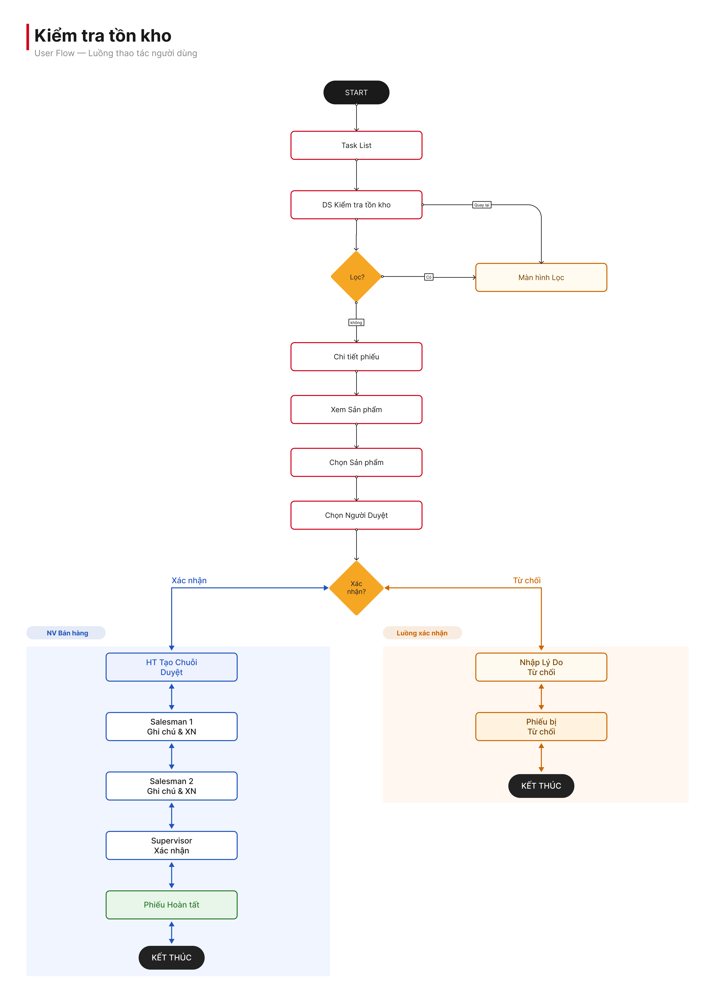

Design goal
Let staff handle everything on mobile: create the ticket at the warehouse, enter actual stock right on the spot, choose approvers, and track it to completion — without calling the office.

| Pain point | Root cause | Consequence |
|---|---|---|
| Scattered information | CI ticket data is spread across 3 different screens — task list, document list, and approval screen | It takes at least 3 navigation steps to check one ticket; staff get lost midway while out in the warehouse |
| No feedback after creating a ticket | No confirmation or next-step guidance after tapping "Pick items & create ticket" | Staff call the office twice about the same ticket — once to confirm it was created, once to ask what to do next |
| Lost context in the approval chain | L1 approver notes are not shown to L2/L3 on the detail screen | Approvers must call the submitter back before deciding; data loses trustworthiness in later stages |
Let staff handle everything on mobile: create the ticket at the warehouse, enter actual stock right on the spot, choose approvers, and track it to completion — without calling the office.
Eliminate re-entry errors from paper that corrupt upstream inventory data. Every minute saved × thousands of teams per day = significant operating hours reclaimed.
Scattered information
Checking one CI ticket requires going through 3 screens and 7+ actions. There is no consolidated screen — staff often get lost midway and have to restart from the task screen.
No feedback after creating a ticket
Staff don't know whether the "Pick items" action succeeded. Some call the office twice about the same ticket — once to confirm it exists, once to ask what to do next.
Lost context in the approval chain
The L2 approver must call the submitter before approving because L1's notes aren't visible on the detail screen. This causes delays and reduces data trustworthiness.

Two wireframe rounds: the first placed the approval chain at the top of the detail screen — staff skipped it; the second moved it below the input fields, matching the "fill in, then submit" mental model. This order held all the way to production.

| Decision | Rationale | Trade-off |
|---|---|---|
| List by status, not by time | Staff look for work to handle, not the oldest item — confirmed in the first wireframe test | Loses the chronological order some supervisors are used to |
| Confirm via bottom sheet, not a new screen | Keeps the warehouse context behind it; fits the "lightweight" nature of a confirm step before fetching data | The confirmation feels less "heavy" — acceptable since there is no irreversible action |
| Inline approver dropdown, not a separate picker screen | The server returns 2–5 names; a new screen adds unnecessary navigation for such a small dataset | Would need a redesign if the approver list grows larger later |
| Approval history visible to every role | Solves the "lost context" pain point without adding a separate history screen | The detail screen gets slightly longer |
Used Cursor AI to turn workshop notes into a structured 17-screen outline and to draft copy for the confirmation dialog. The BA used AI-generated acceptance criteria (derived from the user flow) as the sprint review baseline — cutting back-and-forth questions roughly in half. When applying the Card + BottomSheet + tab-detail pattern to two other modules, I used Claude Cowork to batch-swap components (renaming unnamed frames, variants and layers at scale) — work that used to take a full day was done in a fraction of the time.
Faster per ticket
~64%
~5 min vs ~14 min (2-week pilot)Fewer status-check calls
~70%
Calls to the office reduced (2-week pilot)Fewer quantity-entry errors
~40%
Removed the manual copy-from-paper stepOne shared pattern
3 modules
Designed once, applied in many placesFigures are from a 2-week internal pilot and usability tests with the BA team + 3 field sales staff. Production analytics were not yet instrumented at the time of the pilot.
If I did it again
Next steps